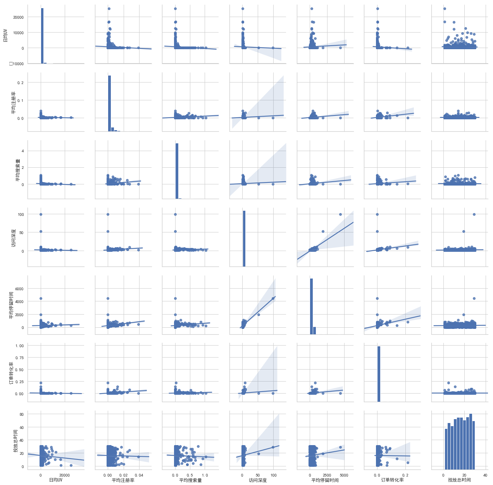
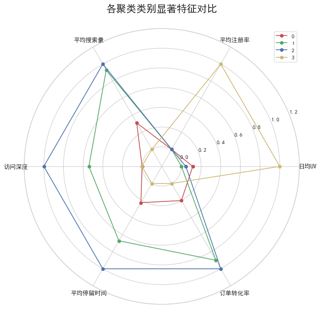

前段时间做了一个项目，该客户是来自教育行业，其主要的宣传获客手段就是在各个渠道投放广告，用广告将用户引流至网站。
但是广告的渠道非常多，那些渠道效果很好，那些效果不好。需要对广告效果分析针对性做广告效果测量和优化工作。我就想到之前学到的KMeans聚类分析广告的方法，在这里整理出来。供日后参考。
1 | import numpy as np |
| 渠道代号 | 日均UV | 平均注册率 | 平均搜索量 | 访问深度 | 平均停留时间 | 订单转化率 | 投放总时间 | 素材类型 | 广告类型 | 合作方式 | 广告尺寸 | 广告卖点 | |
|---|---|---|---|---|---|---|---|---|---|---|---|---|---|
| 0 | A203 | 3.69 | 0.0071 | 0.0214 | 2.3071 | 419.77 | 0.0258 | 20.0 | jpg | banner | roi | 14040 | 打折 |
| 1 | A387 | 178.70 | 0.0040 | 0.0324 | 2.0489 | 157.94 | 0.0030 | 19.0 | jpg | banner | cpc | 14040 | 满减 |
| 2 | A388 | 91.77 | 0.0022 | 0.0530 | 1.8771 | 357.93 | 0.0026 | 4.0 | jpg | banner | cpc | 140*40 | 满减 |
数据审查
1 | data.info() |
<class 'pandas.core.frame.DataFrame'>
RangeIndex: 889 entries, 0 to 888
Data columns (total 13 columns):
渠道代号 889 non-null object
日均UV 889 non-null float64
平均注册率 889 non-null float64
平均搜索量 889 non-null float64
访问深度 889 non-null float64
平均停留时间 887 non-null float64
订单转化率 889 non-null float64
投放总时间 889 non-null float64
素材类型 889 non-null object
广告类型 889 non-null object
合作方式 889 non-null object
广告尺寸 889 non-null object
广告卖点 889 non-null object
dtypes: float64(7), object(6)
memory usage: 90.4+ KB
从上可以看出各个字段的数据类型，并发现字段“平均停留时间”有两个缺失值。
对于有些数据缺失较多，不容易看出来，可以这样统计：
1 | # 这样用表格形式展示每个字段有多少缺失值 |
| 渠道代号 | 日均UV | 平均注册率 | 平均搜索量 | 访问深度 | 平均停留时间 | 订单转化率 | 投放总时间 | 素材类型 | 广告类型 | 合作方式 | 广告尺寸 | 广告卖点 | |
|---|---|---|---|---|---|---|---|---|---|---|---|---|---|
| num | 0 | 0 | 0 | 0 | 0 | 2 | 0 | 0 | 0 | 0 | 0 | 0 | 0 |
1 | # 缺失值用字段均值代替 |
| 日均UV | 平均注册率 | 平均搜索量 | 访问深度 | 平均停留时间 | 订单转化率 | 投放总时间 | |
|---|---|---|---|---|---|---|---|
| count | 889.000 | 889.000 | 889.000 | 889.000 | 889.000 | 889.000 | 889.000 |
| mean | 540.847 | 0.001 | 0.030 | 2.167 | 262.669 | 0.003 | 16.053 |
| std | 1634.410 | 0.003 | 0.106 | 3.801 | 224.112 | 0.012 | 8.509 |
| min | 0.060 | 0.000 | 0.000 | 1.000 | 1.640 | 0.000 | 1.000 |
| 25% | 6.180 | 0.000 | 0.001 | 1.392 | 126.200 | 0.000 | 9.000 |
| 50% | 114.180 | 0.000 | 0.003 | 1.793 | 236.660 | 0.000 | 16.000 |
| 75% | 466.870 | 0.001 | 0.012 | 2.216 | 357.930 | 0.002 | 24.000 |
| max | 25294.770 | 0.039 | 1.037 | 98.980 | 4450.830 | 0.216 | 30.000 |
从描述性统计我们可以看到
- UV的数据波动很大，说明不同渠道差异是很明显的。但是差异并不一定是异常值，广告流量的特征是有爆发性的，所以一般不作为异常值处理。
- 可以看到平均注册率，平均搜索量，订单转化率多个统计量为0，但是考虑到极大值本身就很小，说明数据本身就很小，符合实际情况，所以是正常的。
1 | data_2.corr().round(2) |
| 日均UV | 平均注册率 | 平均搜索量 | 访问深度 | 平均停留时间 | 订单转化率 | 投放总时间 | |
|---|---|---|---|---|---|---|---|
| 日均UV | 1.00 | -0.05 | -0.07 | -0.02 | 0.04 | -0.05 | -0.04 |
| 平均注册率 | -0.05 | 1.00 | 0.24 | 0.11 | 0.22 | 0.32 | -0.01 |
| 平均搜索量 | -0.07 | 0.24 | 1.00 | 0.06 | 0.17 | 0.13 | -0.03 |
| 访问深度 | -0.02 | 0.11 | 0.06 | 1.00 | 0.72 | 0.16 | 0.06 |
| 平均停留时间 | 0.04 | 0.22 | 0.17 | 0.72 | 1.00 | 0.25 | 0.05 |
| 订单转化率 | -0.05 | 0.32 | 0.13 | 0.16 | 0.25 | 1.00 | -0.00 |
| 投放总时间 | -0.04 | -0.01 | -0.03 | 0.06 | 0.05 | -0.00 | 1.00 |
1 | # 绘制分布图 |

从上述相关性的分析中看出，只有平均停留时间和访问深度虽然有相关性0.72，但是特征并不是很明显。其余特征之间相关性并不突出。
数据预处理
1 | # 将字符串转换成整数，离散化 |
从数据可以看到，UV和转化率这些字段的数据处在不同的量级，UV有上万，而转化率却小于1，因此需要做数据标准化，这里采用MINMAX标准化
1 | # 数据标准化 |
聚类
KMeans聚类算法的关键点在于K值的确定。KMeans作为非监督学习，并没有“最佳”K值，但是从数据特征上来讲，最佳的K值是类内距离最小化，类间距离最大化。有如平均轮廓系数，类内距离/类间距离等方法可以来评估K值。这里我们用枚举法计算每个K之下的平均轮廓系数，然后选出最大系数是K值
1 | score_list = [] # 储存系数的列表 |
[[2, 0.4669282108253203], [3, 0.5490464644387694], [4, 0.5696854692292723], [5, 0.481866036548318], [6, 0.45477666842362924], [7, 0.4820426124661439], [8, 0.5044722277929435], [9, 0.5269749291473864], [10, 0.5433876151990182]]
Best K is:4 with average silhouette of 0.5697
可以看到，当K=4的时候，轮廓之最大。所以这里选择4作为最佳K值
1 | cluster_labels = pd.DataFrame(good_cluster,columns=['cluster']) |
| 渠道代号 | 日均UV | 平均注册率 | 平均搜索量 | 访问深度 | 平均停留时间 | 订单转化率 | 投放总时间 | 素材类型 | 广告类型 | 合作方式 | 广告尺寸 | 广告卖点 | cluster | |
|---|---|---|---|---|---|---|---|---|---|---|---|---|---|---|
| 0 | A203 | 3.69 | 0.0071 | 0.0214 | 2.3071 | 419.77 | 0.0258 | 20.0 | jpg | banner | roi | 14040 | 打折 | 3 |
| 1 | A387 | 178.70 | 0.0040 | 0.0324 | 2.0489 | 157.94 | 0.0030 | 19.0 | jpg | banner | cpc | 14040 | 满减 | 3 |
| 2 | A388 | 91.77 | 0.0022 | 0.0530 | 1.8771 | 357.93 | 0.0026 | 4.0 | jpg | banner | cpc | 14040 | 满减 | 3 |
| 3 | A389 | 1.09 | 0.0074 | 0.3382 | 4.2426 | 364.07 | 0.0153 | 10.0 | jpg | banner | cpc | 14040 | 满减 | 3 |
| 4 | A390 | 3.37 | 0.0028 | 0.1740 | 2.1934 | 313.34 | 0.0007 | 30.0 | jpg | banner | cpc | 140*40 | 满减 | 3 |
寻找各个分类的数据特征
1 | # 计算每个类别的计数 |
| 0 | 1 | 2 | 3 | |
|---|---|---|---|---|
| count | 411 | 297 | 27 | 154 |
| per | 0.4623 | 0.3341 | 0.0304 | 0.1732 |
| 日均UV | 1369.81 | 1194.69 | 1263.03 | 2718.7 |
| 平均注册率 | 0.003 | 0.003 | 0.003 | 0.005 |
| 平均搜索量 | 0.082 | 0.144 | 0.151 | 0.051 |
| 访问深度 | 0.918 | 5.728 | 9.8 | 0.948 |
| 平均停留时间 | 165.094 | 285.992 | 374.689 | 104.14 |
| 订单转化率 | 0.009 | 0.016 | 0.017 | 0.007 |
| 投放总时间 | 8.462 | 8.57 | 7.996 | 8.569 |
| 素材类型 | swf | jpg | swf | jpg |
| 广告类型 | 不确定 | 不确定 | 通栏 | banner |
| 合作方式 | cpc | cpc | cpc | cpc |
| 广告尺寸 | 60090 | 60090 | 900120 | 308388 |
| 广告卖点 | 打折 | 直降 | 打折 | 满减 |
1 | # 绘制极坐标图来可视化数据特征 |

简要分析
从数据上初步分析：
- 0号类别占比最大，但是在数据特征上没有突出的亮点，各方面都很平庸。
- 1号类别有着33%的占比，同时在平均搜索量，停留时间，访问深度及订单转化率方面表现突出
- 2号类别与1号相似度很高，并且在1号的典型特征上表现更好，但是占比过低，只有3%
- 3号类别与其他类别区别明显，体现出流量大的特征。但是流量质量较差。
针对业务如何选择不同类别的广告商。
- 0号广告渠道各方面表现一般，需要重新考虑投放价值，在资金紧张时可以考虑取舍。
- 1号和2号广告渠道是流量质量较高的渠道，尤其是渠道2.所以运营策略里，应该加强对注册引导，注册激励方面的引导。重点宣传打折，直降等重点，广告尺寸适宜900*120尺寸。此类广告渠道应作为流量质量支撑的角色，在投放组合中重点考虑。
- 3号渠道是典型的流量型渠道，以作为营销活动中的流量骨干，引流效果明显。投放宜以满减为促销点，广告尺寸适宜308*388.